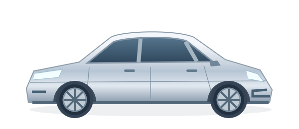

Omat autot yhdessä.
Ajoneuvon perustiedot ja viimeisin mittarilukema löytyvät omasta näkymästään.
OMA AUTO. OMA HISTORIA.
Autosi matka ansaitsee oman muistin.
Ajoura on kehitteillä oleva digitaalinen ajoneuvopäiväkirja. Ajoneuvot, mittarilukemat ja huoltotapahtumat selkeänä kokonaisuutena.
Interaktiivinen konseptidemo · Ei kirjautumista

ABC-123 · 2020
Pieni merkintä tänään. Selkeä historia huomenna.
Yksi ajoneuvo kerrallaan. Yksi merkintä kerrallaan.
01 — AJOURAMIKÄ AJOURA ON?
Milloin öljyt vaihdettiin? Paljonko silloin oli ajettu? Ajouran idea on yksinkertainen: autosi tapahtumat kulkevat samassa päiväkirjassa.
Ajoneuvon perustiedot ja viimeisin mittarilukema löytyvät omasta näkymästään.
Kirjaa huolto, renkaanvaihto tai katsastus päivämäärän ja ajokilometrien kanssa.
Palaa aiempiin tapahtumiin ja avaa niiden tiedot ilman hajanaisia muistiinpanoja.
Avaa oma auto ja näe sen tärkeimmät tiedot yhdellä silmäyksellä.
Mitä tehtiin, milloin ja millä mittarilukemalla? Lyhyt merkintä riittää.
Tapahtuma liittyy auton aikajanaan ja löytyy sieltä seuraavallakin kerralla.
AJOURA APP / ENSIMMÄINEN KATSAUS
Avaa sovellusdemo, valitse esimerkkiauto ja lisää ensimmäinen merkintä. Puhelimen sisällä olevat painikkeet toimivat oikeasti.
Avaa sovellusdemoAjouraa kehitetään parhaillaan. Demo havainnollistaa tulevan sovelluksen ideaa kuvitteellisilla tiedoilla.
Varsinainen sovellus on tulossa myöhemmin.
KONSEPTI / 2026